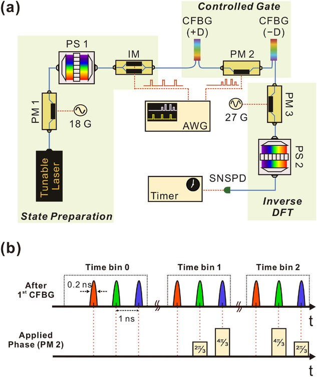

Sabre Kais Group
Quantum Information and Quantum Computation
Quantum Simulation in Qudit Space
The Phase Estimation Algorithm (PEA) is an important quantum algorithm used independently or as a key subroutine in other quantum algorithms. Currently most implementations of the PEA are based on qubits, where the computational units in the quantum circuits are 2D states. Performing quantum computing tasks with higher dimensional states—qudits —has been proposed, yet a qudit‐based PEA has not been realized. Using qudits can reduce the resources needed for achieving a given precision or success probability. Compared to other quantum computing hardware, photonic systems have the advantage of being resilient to noise, but the probabilistic nature of photon–photon interaction makes it difficult to realize two‐photon controlled gates that are necessary components in many quantum algorithms. In this work, an experimental realization of a qudit‐based PEA on a photonic platform is reported, utilizing the high dimensionality in time and frequency degrees of freedom (DoFs) in a single photon. The controlled‐unitary gates can be realized in a deterministic fashion, as the control and target registers are now represented by two DoFs in a single photon. This first implementation of a qudit PEA, on any platform, successfully retrieves any arbitrary phase with one ternary digit of precision. View PDF
